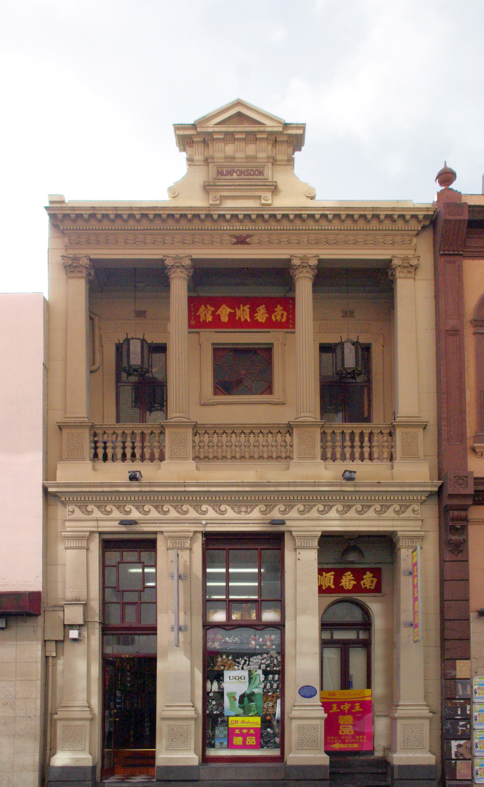

Num Pon Soon
A Taishanese merchant who became a central figure in Melbourne’s See Yup Society. The society’s temple and associated houses preserve a material connection to mutual aid, worship and community organisation.
Find the See Yup Temple →